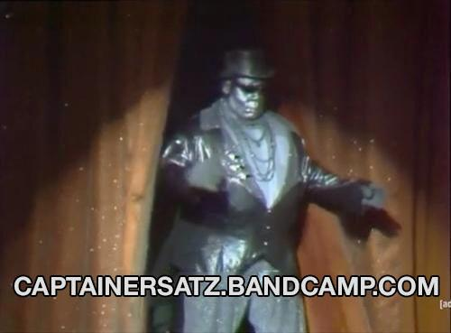

Captain Ersatz and Related: Ultimate Webzone
Built from scratch and work in progress
The text to the right of this is filler. This is going to be the webpage of Captain Ersatz and his related music projects, web design(?) and etc. Important things to do are to make sure that this page looks sufficiently aesthetic and retro, add a guestbook for people to sign when they visit, web ring carousel at the bottom, coding page, and various links to friends and other categories in the links page.
I used my knowledge of this phase of spiritual pathology, and laid down a rule that she should not be present with Lucy or think of her illness more than was absolutely required. She assented readily, so readily that I saw again the hand of Nature fighting for life. Van Helsing and I were shown up to Lucy's room. If I was shocked when I saw her yesterday, I was horrified when I saw her to-day. She was ghastly, chalkily pale; the red seemed to have gone even from her lips and gums, and the bones of her face stood out prominently; her breathing was painful to see or hear. Van Helsing's face grew set as marble, and his eyebrows converged till they almost touched over his nose. Lucy lay motionless, and did not seem to have strength to speak, so for a while we were all silent. Then Van Helsing beckoned to me, and we went gently out of the room. The instant we had closed the door he stepped quickly along the passage to the next door, which was open. Then he pulled me quickly in with him and closed the door. "My God!" he said; "this is dreadful. There is no time to be lost. She will die for sheer want of blood to keep the heart's action as it should be. There must be transfusion of blood at once. Is it you or me?"